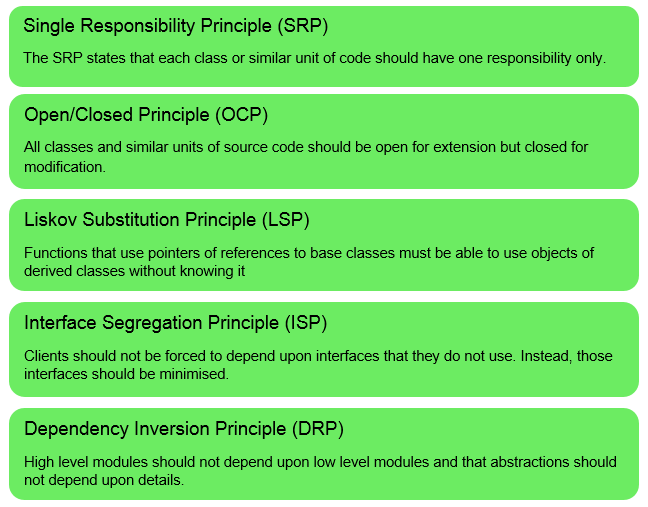
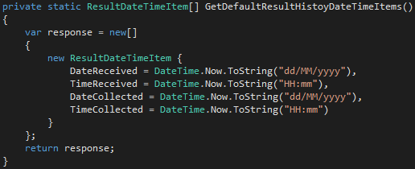
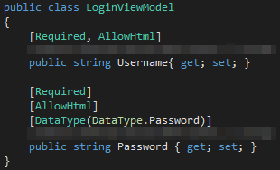

SOLID Principles of Software Design

Single Responsibility Principle
Robert C. Martin explains this principle with the statement: 'A class should have only one reason to change.'. What it actually means is that each module or function should have only one specific responsibility, and it should be encapsulated.
Anyone who's done some object-oriented programming should be familiar with this concept. Functions are the building blocks of software, and we use them even when we're not aware of it.
An ideal program is designed so that every function or method does something very specific, and we avoid creating a function that does multiple things. This is one of the ways to make code more readable.
To give a real-world example:

As you can see, it simply returns the date and time to the calling function. It doesn't print the time or do anything except return it.
And another function that simply sets the username and password properties:

You'd also expect there to be fewer compile errors, and the code is more easily unit tested.
Open/Closed Principle
Modules 'should be open for extension but closed for modification', as the Wikipedia entry states. The following rules are also stated:
- A module is considered open if it can be extended.
- A module is closed if it's available to use by other modules, and has a well-defined and stable description.
Basically this expands on the principle of single responsibility, the two being a guide to the proper design of a module.
Liskov Substitution Principle
This principle is essentially all about base classes and derived classes. A way to make code reusable, so the programmer isn't creating the same function multiple times. Instead, the programmer uses instances of a base class where needed.
'if S is a subtype of T, then objects of type T in a program may be replaced with objects of type S without altering any of the desirable properties of that program
'.
Another general rule is derived classes shouldn't throw exceptions if their base classes don't.
Interface Segregation Principles
Apparently 'many client-specific interfaces are better than one general-purpose interface'. I think it refers to having multiple entry points, each for something specific. If the other principles are followed, it should be more straightforward to trace the code for each entry point and modify it as required.
The other idea here is that clients shouldn't have dependencies on components it doesn't use.
This principle is applied by breaking down large interfaces into smaller specific ones.
Say, for example, we have a large interface. A problem with that interface could break the interoperability with clients that don't use the affected part of that interface. Conversely, if the interface was broken down into smaller interfaces, the problem would be isolated and would have more limited effects on the clients.
This principle also creates layers of abstraction to reduce dependencies. You could design the software to have interfaces and implementation classes - interfaces describe the intention, and implementation classes perform the intended task.
If this principle is followed, a developer shouldn't need to be concerned with the details of how a feature works, but only with what the feature does. The developer should be able to make use of the function/component purely by its interface. The implementation could also be changed without breaking the software.
This information hiding is referred to as 'encapsulation'.
Dependency Inversion Principle
A program should depend upon abstractions instead of depending on concretions. In other words, the program should be dependent on the higher-level stuff instead of the low-level components. It's easy to see why.
Everything should be determined on what the abstractions specify the program should do.
In practice this refers to the decoupling or loose coupling of software modules. This is referred to as 'dependency inversion' because it inverts the way people think about object-oriented programming.
Traditionally the higher-level functioning of a program depend on the lower level components that perform tasks. A defect in the lower-level could therefore break the high-level functions. Plus it limits the potential for re-using modules.
One way to solve this is to add a mediation layer (or interface) between the high and low-level components.